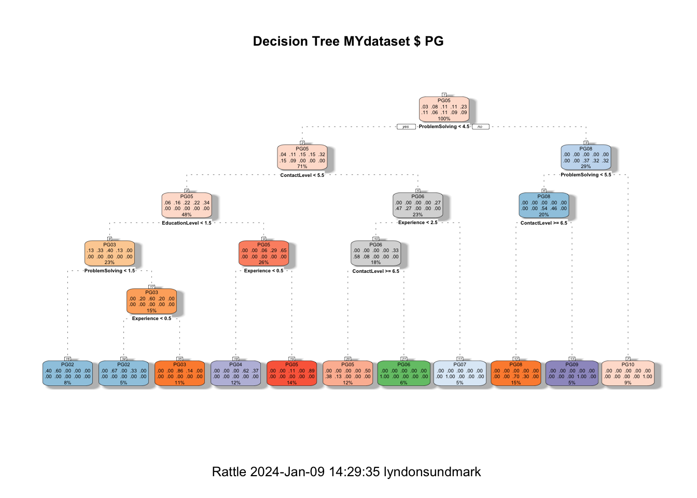

About a year back I posted a couple of blog articles on Data Driven Job Classification, showing a variety of tools to do this including R, Azure machine Learning and a few others. Its purpose was to encourage HR folks to start thinking about HR’s future being more in the use of HR analytics.
As the terminology in People Analytics is continuing to unfold and evolve, it is becoming increasing apparent that one of the best ways to understand People Analytics -both stringently and widely at the same time is to see it as:
“Data Driven” HR and HR Decision Making
When Data Science as a process and a field meets the HR context
Seeing it this way helps prevent us from unnecessarily limiting the contribution that it can make, and yet at the same time help prevent proliferation of terminology to the point of meaninglessness. ‘Data driven’ must be how we conduct HR Management and decision making in the future. Data Science contributes to that goal by itself being a ‘data driven’ process.
Another way to not artificially limit the application of People Analytics, is to remind ourselves of the potential scope of the relevant HR context. People Analytics can be applied to:
information on what is happening to employees in the organization over time. Typically this is thought of as HR metrics/demographics. Many still see this as the ‘extent’ of HR analytics.
how well the HR department conducts its business and operations. These are metrics related to process improvement. Right now this is more typically thought of in the ’quality improvement realm. But it’s still data driven decision making
‘direct’ embedding of statistical algorithms in our HR methodologies- how we actually ‘do’ HR. There is huge application of People Analytics here. HR needs to get out of its traditional non-analytic methodologies paradigm where data science can be brought to bear.
People Analytics in R- Job Classification is an example of embedding statistical algorithms in our HR methodologies.
With that in mind, I thought I would do a ‘revisit’ of job classification as an example of People Analytics in R. By revisit, I mean let’s restrict the tool to R, and let’s apply the data science process/framework to it. This would put into into a format similar to my last 2 blog articles. Additionally, in this article more time will be spent on describing how we generate the data in the first place.
The files for this currrent blog article can be found in this location:
Ok - what is our goal here? Perhaps a quick primer on job classification would be in order to answer the question.
A Quick Job Classification Primer
Job Classification is at the heart of compensation and salary administration in HR. We desire to pay our employees fairly- both from an external and internal perspective. Salary surveys help us out on the external side. But job classification helps us out on the internal picture. We try to understand the similarities and differences between jobs in the organization.
At a base level, this process starts with documenting job descriptions. We document tasks, knowleges, and skills needed to complete the work of the organization as organized within our jobs. Usually as a result of job descriptions being documented, we design broader categories that the job descriptions fall into. We call these job classifications. They attempt to categorize like with like and distinguish between job descriptions that are different. We often are concerned with the characteristics of how responsibility, accountability, supervision, education level, experience etc vary between these classifications. And to tie into our compensations systems, we often have paygrades assigned to the classification.
So what is our goal in Job Classification? To properly categorize ‘job descriptions’ into appropriate job classifications. When job classifications are written they are, by definition, of a ‘known’, ‘intended’ population. Job descriptions until they are categorized are outside of that population. Once proper categorization is made of a job description, it becomes part of that ‘known’ population. It is ‘unknown’ by the population until then. When all the job descriptions are categorized into job classifications, both the job descriptions and the job classifications are part of the known population. Any new job description written in the future is unknown until it is classified as well.
Why is this significant to People Analytics? The above process indicates that we are trying to classify something, or find the right category, that we don’t know based on how it compares to a population we do know. HR job classification is the context here. It just so happens that in data science and statistics there are all sorts of algorithms designed to create categories or find the best fit among known categories.
For decades we have had job classification as a process in HR, and classification algorithms in statistics- but HR,in most organizations, is not recognizing this and the potential contribution it could/can make .
So in People Analytics in R -Job Classification:
* our primary goal is to classify job descriptions into job classifications using the power of statistical algorithms to assist in prediction of best fit.* our secondary goal might be to help improve the design of our job classification system/framework.
2.Collect And Manage Data
For purposes of this application of People Analytics, this step in the data science process will take the longest initially. This is because in almost every organization, the existing job classifications or categories, and the job descriptions themselves are not typically represented in numerical format suitable for statistical analysis. Sometimes, that which we are predicting- the pay grade is numeric because point methods are used in evaluation and different paygrades have different point ranges. But more often the job descriptions are narrative as are the job classification specs or summaries. For this blog article, we will assume that and delineate the steps required.
Collecting The Data
The following are typical steps:
Gather together the entire set of narrative, written job classification specifications.
Review all of them to determine what the common denominators are- what the organization is paying attention to , to differentiate them from each other.
For each of the common denominators, pay attention to descriptions of how much of that common denominator exists in each narrative, writing down the phrases that are used.
For each common denominator, develop an ordinal scale which assigns numbers and places them in a ‘less to more’ order
Create a datafile where each record (row) is one job classification, and where each column is either a common denominator or the job classification identifier or paygrade.
Code each job classification narrative into the datafile recording their common denominator information and other pertinent categorical information.
Gather together the entire set of narrative, written job classification specifications.
This initially represents the ‘total’ population of what will be a ‘known’ population. Ones that by definition represent the prescribed intended categories and levels of paygrades. These are going to be used to compare an ‘unknown’ population- unclassified job descriptions, to determine best fit. But before this can happen, we should have confidence that the job classifications themselves are well designed- since they will be the standard against which all job descriptions will be compared.
Review all of them to determine what the common denominators are
Technically speaking, anything that appears in the narrative could be considered a feature that is a common denominator including the tasks, knowledges described. But few organizations have that level of automation in their job descriptions. So generally broader features are used to describe common denominators. Often they may include the following:
Education Level
Experience
Organizational Impact
Problem Solving
Supervision Received
Contact Level
Financial Budget Responsibility
To be a common denominator they need to be mentioned or discernable in every job classification specification
Pay attention to the descriptions of how much of that common denominator exists in each narrative
For each of the above common denominators ( if these are ones you use), go through each narrative identify where the common denominator is mentioned and write down the words used to describe how much of it exists. Go through you entire set of job classification specs and tabulate these for each common denominator and each class spec.
For each common denominator, develop an ordinal scale
Ordinal means in order. You order the descriptions from less than to more than. Then apply a numerical indicator to it. 0 might mean it doesnt exist in any significant way, 1 might mean something at a low or introductory level, higher numbers meaning more of it. The scale should have as many numbers as distinguishable descriptions.(You may have to merge or collapse descriptions if it’s impossible to distinguish order)
Create a datafile
This might be a spreadsheet.
each record(row) will be one job classification, and each column will be either a common denominator or the job classification identifier or paygrade or other categorical information.
Code each job classification narrative into the datafile
Record their common denominator information and other pertinent categorical or identifying information. At the end of this task you will have as many records as you have written job classification specs.
At the end of this effort you will have something that looks like the data found at the following link:
ID JobFamily JobFamilyDescription JobClass
Min. : 1.00 Min. : 1.000 Length:66 Min. : 1.00
1st Qu.:17.25 1st Qu.: 4.000 Class :character 1st Qu.:17.25
Median :33.50 Median : 7.000 Mode :character Median :33.50
Mean :33.50 Mean : 7.606 Mean :33.50
3rd Qu.:49.75 3rd Qu.:11.000 3rd Qu.:49.75
Max. :66.00 Max. :15.000 Max. :66.00
JobClassDescription PayGrade EducationLevel Experience
Length:66 Min. : 1.000 Min. :1.000 Min. : 0.000
Class :character 1st Qu.: 4.000 1st Qu.:2.000 1st Qu.: 0.000
Mode :character Median : 5.000 Median :4.000 Median : 1.000
Mean : 5.697 Mean :3.167 Mean : 1.758
3rd Qu.: 8.000 3rd Qu.:4.000 3rd Qu.: 2.750
Max. :10.000 Max. :6.000 Max. :10.000
OrgImpact ProblemSolving Supervision ContactLevel
Min. :1.000 Min. :1.000 Min. :1.000 Min. :1.000
1st Qu.:2.000 1st Qu.:3.000 1st Qu.:1.000 1st Qu.:3.000
Median :3.000 Median :4.000 Median :4.000 Median :6.000
Mean :3.348 Mean :3.606 Mean :3.864 Mean :4.758
3rd Qu.:4.000 3rd Qu.:5.000 3rd Qu.:5.750 3rd Qu.:7.000
Max. :6.000 Max. :6.000 Max. :7.000 Max. :8.000
FinancialBudget PG
Min. : 1.000 PG05 :15
1st Qu.: 2.000 PG03 : 7
Median : 5.000 PG04 : 7
Mean : 5.303 PG06 : 7
3rd Qu.: 7.750 PG08 : 7
Max. :11.000 PG09 : 6
(Other):17
On the surface there doesn’t seem to be any issues with data. This gives a summary of the layout of the data and the likely values we can expect. PG is the category we will predict. It’s a categorical representation of the numeric paygrade. Education level through Financial Budgeting Responsibility will be the independent variables/measures we will use to predict. The other columns in file will be ignored.
Organize the data
Lets narrow down the information to just the data used in the model.
We are predominantly interested in MYinput and MYtarget because they represent the predictors and what is to be predicted respectively. You will notice for the time being that we are not partitioning the data. This will be elaborated upon in model building.
What the data is initially telling us
Lets use the caret library again for some graphical representations of this data.
The first set of charts show the distribution of the independent variable values(predictors) by PG.
The second set of charts show the range of values of the predictors by PG. PG is ordered left to right in ascending order from PG1 to PG10. In each of the predictors we would expect increasing levels as we move up the paygrades and from left to right (or at least not dropping from previous paygrade).
This is the first indication by a graphic ‘visual’ that we ‘may’ have problems in the data or the interpretation of the coding of the information. Then again the coding may be accurate based on our descriptions and our assumptions false. We will probably want to recheck our coding from the job description to make sure.
3.Build The Model
Lets use the rattle library to efficiently generate the code to run the following classification algorithms against our data:
Decision Tree
Random Forest
Support Vector Machines
Linear
Decision Tree
library(rattle)
Loading required package: tibble
Loading required package: bitops
Rattle: A free graphical interface for data science with R.
Version 5.5.1 Copyright (c) 2006-2021 Togaware Pty Ltd.
Type 'rattle()' to shake, rattle, and roll your data.
#============================================================# Rattle timestamp: 2016-04-27 12:51:16 x86_64-w64-mingw32 # Decision Tree # The 'rpart' package provides the 'rpart' function.library(rpart, quietly=TRUE)# Reset the random number seed to obtain the same results each time.#crv$seed <- 42 #set.seed(crv$seed)# Build the Decision Tree model.MYrpart <-rpart(PG ~ .,data=MYdataset[, c(MYinput, MYtarget)],method="class",parms=list(split="information"),control=rpart.control(minsplit=10,minbucket=2,maxdepth=10,usesurrogate=0, maxsurrogate=0))# Generate a textual view of the Decision Tree model.print(MYrpart)
#============================================================# Rattle timestamp: 2016-04-27 12:51:16 x86_64-w64-mingw32 # Support vector machine. # The 'kernlab' package provides the 'ksvm' function.library(kernlab, quietly=TRUE)
Attaching package: 'kernlab'
The following object is masked from 'package:ggplot2':
alpha
# Build a Support Vector Machine model.#set.seed(crv$seed)MYksvm <-ksvm(as.factor(PG) ~ .,data=MYdataset[,c(MYinput, MYtarget)],kernel="rbfdot",prob.model=TRUE)# Generate a textual view of the SVM model.MYksvm
Support Vector Machine object of class "ksvm"
SV type: C-svc (classification)
parameter : cost C = 1
Gaussian Radial Basis kernel function.
Hyperparameter : sigma = 0.151222236388729
Number of Support Vectors : 64
Objective Function Value : -3.8437 -3.6794 -2.9812 -2.3382 -1.5472 -1.3242 -1.3688 -1.5097 -1.3689 -7.7967 -4.483 -2.6257 -1.6532 -1.3211 -1.3594 -1.5029 -1.3566 -8.6345 -6.5264 -3.1206 -2.3037 -1.8315 -2.088 -1.6889 -10.3209 -3.9815 -2.5211 -2.0744 -2.4871 -1.8299 -10.2577 -6.5316 -3.8955 -3.8986 -2.2741 -7.6954 -5.6307 -4.8631 -2.3234 -4.7859 -4.1069 -2.112 -9.9423 -6.2772 -6.586
Training error : 0.30303
Probability model included.
# Time taken: 0.43 secs
Linear Model
#============================================================# Rattle timestamp: 2016-04-27 12:51:17 x86_64-w64-mingw32 # Regression model # Build a multinomial model using the nnet package.library(nnet, quietly=TRUE)# Summarise multinomial model using Anova from the car package.library(car, quietly=TRUE)# Build a Regression model.MYglm <-multinom(PG ~ ., data=MYdataset[,c(MYinput, MYtarget)], trace=FALSE, maxit=1000)# Generate a textual view of the Linear model.rattle.print.summary.multinom(summary(MYglm,Wald.ratios=TRUE))
# Time taken: 0.16 secs#============================================================# Rattle timestamp: 2016-04-27 12:51:52 x86_64-w64-mingw32 # Plot the resulting Decision Tree. # We use the rpart.plot package.fancyRpartPlot(MYrpart, main="Decision Tree MYdataset $ PG")

A readable view of the decision tree can be found at the following pdf:
Because we have multiple categories to be predicted, the only evaluation used is Error Matricies.
Lets see how well the models performed.
Decision Tree
#============================================================# Rattle timestamp: 2016-04-27 13:11:52 x86_64-w64-mingw32 # Evaluate model performance. # Generate an Error Matrix for the Decision Tree model.# Obtain the response from the Decision Tree model.MYpr <-predict(MYrpart, newdata=MYdataset[,c(MYinput, MYtarget)], type="class")# Generate the confusion matrix showing counts.table(MYdataset[,c(MYinput, MYtarget)]$PG, MYpr,dnn=c("Actual", "Predicted"))
# Calculate the overall error percentage.cat(100*round(1-sum(diag(per), na.rm=TRUE), 2))
23
# Calculate the averaged class error percentage.cat(100*round(mean(per[,"Error"], na.rm=TRUE), 2))
28
Random Forest
# Generate an Error Matrix for the Random Forest model.# Obtain the response from the Random Forest model.MYpr <-predict(MYrf, newdata=na.omit(MYdataset[,c(MYinput, MYtarget)]))# Generate the confusion matrix showing counts.table(na.omit(MYdataset[,c(MYinput, MYtarget)])$PG, MYpr,dnn=c("Actual", "Predicted"))
# Calculate the overall error percentage.cat(100*round(1-sum(diag(per), na.rm=TRUE), 2))
2
# Calculate the averaged class error percentage.cat(100*round(mean(per[,"Error"], na.rm=TRUE), 2))
5
Support Vector Machine
# Generate an Error Matrix for the SVM model.# Obtain the response from the SVM model.MYpr <- kernlab::predict(MYksvm, newdata=na.omit(MYdataset[,c(MYinput, MYtarget)]))# Generate the confusion matrix showing counts.table(na.omit(MYdataset[,c(MYinput, MYtarget)])$PG, MYpr,dnn=c("Actual", "Predicted"))
# Calculate the overall error percentage.cat(100*round(1-sum(diag(per), na.rm=TRUE), 2))
30
# Calculate the averaged class error percentage.cat(100*round(mean(per[,"Error"], na.rm=TRUE), 2))
39
Linear Model
# Generate an Error Matrix for the Linear model.# Obtain the response from the Linear model.MYpr <-predict(MYglm, newdata=MYdataset[,c(MYinput, MYtarget)])# Generate the confusion matrix showing counts.table(MYdataset[,c(MYinput, MYtarget)]$PG, MYpr,dnn=c("Actual", "Predicted"))
# Calculate the overall error percentage.cat(100*round(1-sum(diag(per), na.rm=TRUE), 2))
6
# Calculate the averaged class error percentage.cat(100*round(mean(per[,"Error"], na.rm=TRUE), 2))
11
Critique
It turns out that:
The model that performed best was Random Forests at 2% error
The linear model was next at 6% error.
Support Vector Machines performed less well at 18% error.
And Decision trees, while being able to give us ‘visual’ on what rules are being used, performed worst of all at 23% error.
Earlier I said ,that for purposes of this analysis, we would not have training and test datasets. This is because the total population of our data is only 66 records which are scattered among up to 10 categories. Unless we took special care, if we randomly created test and training datasets, we could not guarantee that each of these datasets would have all 10 groups represented. So we use all the data to predict itself.(usually not recommended if lots of data)
If as an organization , we were just starting out with this kind of endeavor, at this point you would only have the job classification specs coded into the dataset. it would be the only ‘known’ population. In some ways it is useful to do this here- to gauge how well designed our paygrades are ‘differentiated’ from each other. Even though we know that the known population predicting itself will give lower error rates, suffice to say that here, the hypothetical organization is seeing results that would make it worthwhile to expand the coding effort. If at this stage, the data could not reliably predict itself, we might to rethink our approach.
In most organizations who have written job descriptions and job classification specs, their job descriptions are already classified as well. So we arent necessarily restricted to just coding the job class specs. We could go ahead and code the job descriptions on the same common denominator features.( outside the context of this blog article) This would make the ‘known’ population quite a bit bigger. On a bigger population too we could also have the population predict itself but additionally do cross validation and have both training and test datasets.
While the above results were found on just the job class specs, it would be wise to have a much larger population before deciding on which model is best to deploy in real life.
One other observation- you noticed in the results of the various models, that some model had predictions that were one or two paygrades off ‘higher or lower’ than the actual existing paygrade.
In a practical sense this might mean:
these might be candidates for determining whether criteria/features for these pay grades should be redefined
and or whether there are ,in reality, fewer categories needed.
We could extend our analysis and modelling to ‘cluster’ analysis.This would create a newer grouping based on the existing characteristics, and then the classification algorithms could be rerun to see if there was any improvement.
Some articles on People Analytics suggest that on a ‘maturity level’ basis, the step/stage beyond prediction is ‘experimental design’. If we are using our results to modify our design of our systems to predict better, that might be an example of this.
5.Present Results And Document
As with previous blog articles, a good way of carrying out this step is this the .rmd file which is used to create this blog article. R Markdown language is used to create this narrative as well as allow for ‘inline’ inclusion of the R program and its output. The rmd file can be found here:
In R the easiest form of deploying the model, is to run your unknown data against the model . Put the data in a separate dataset and run the following R commands:
The DeployDataset represemts the information coded from a single job description (paygrade not known). PredictedJobGrade compares the coded values against the MYrf (random forest model) and the prediction is determined. In this case - PG05.
Final Comments
This is the third in a series of blog articles I have written to illustrate the use of People Analytics- data driven decision making for HR.
These articles have had the intention of providing real tangible examples of the application of data science to HR, to illustrate the data science process in the HR context, and to show that the scope mentioned previously in this article, isnt just theoretical- its real.
None of the articles is intended to illustrate necessarily best practices, but rather to show a structured process of thinking and analysis. The intention has also been to encourage more of being ‘data driven’ in HR, making People Analytics not an addon to HR but rather THE way we conducted HR decision making in the future, where applicable, human judgement is ‘added on’ to a rigorous analysis of the data in the first place.’